本章会带大家手把手在CentOS7环境下搭建Redis,并且带你一一排坑
一.安装CentOS7
1.下载VMware
2.下载CentOS 7镜像
3.在虚拟机上安装CentOS 7
选择创建虚拟机
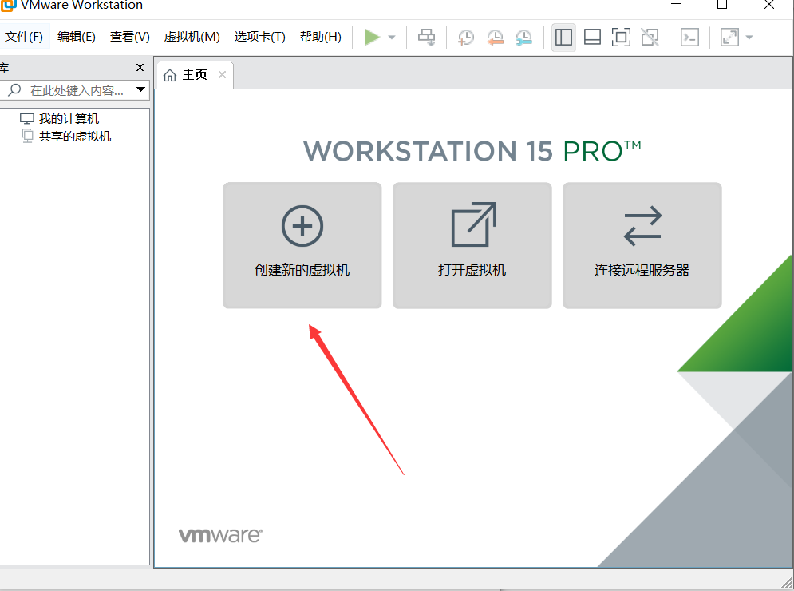
选择自定义
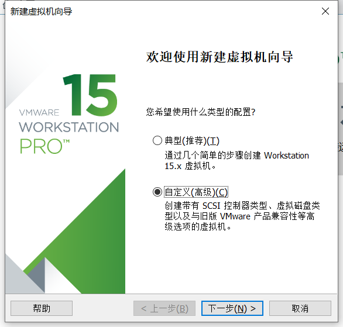
这里看你下载的VMware是什么版本,我下载的是15X所以我选择15.X
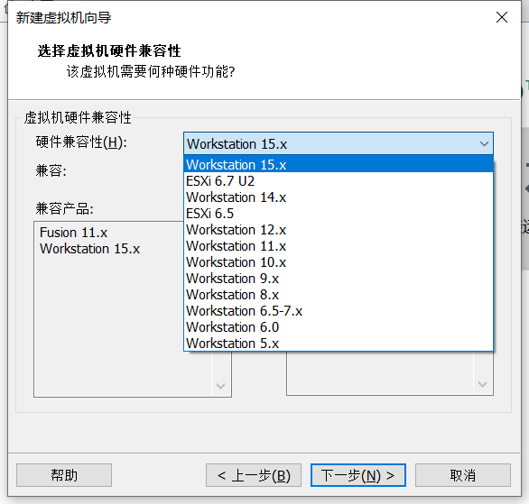
选择稍后安装操作系统
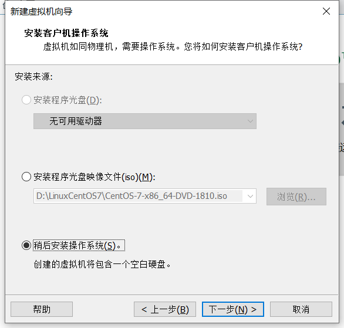
随后点下一步,这里操作系统选择Linux,版本选择CentOS7
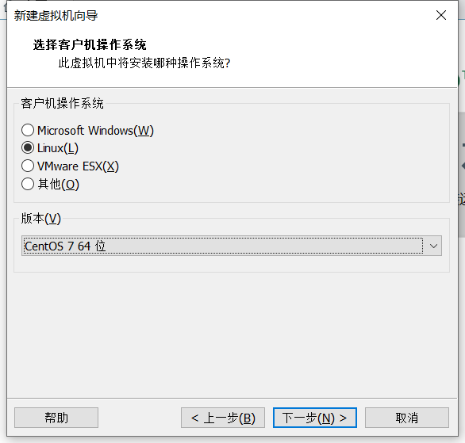
安装位置改不改看你自己
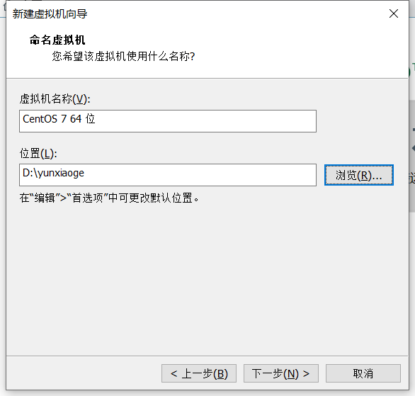
这里处理器数量根据自己CPU情况来定
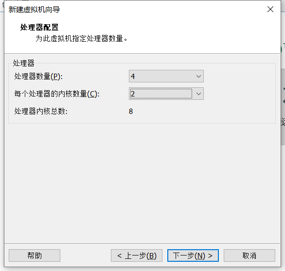
运行内存默认为1G，这里因为我是8G运行内存所以我选择2G,根据自己机器情况来定
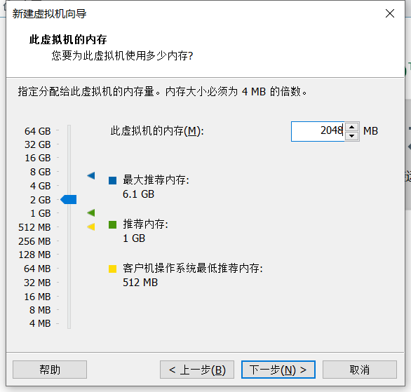
网络类型这里我们选择桥连接,桥连接也就是直接用我们主机上的网络,并不是Linux重新建立网络连接
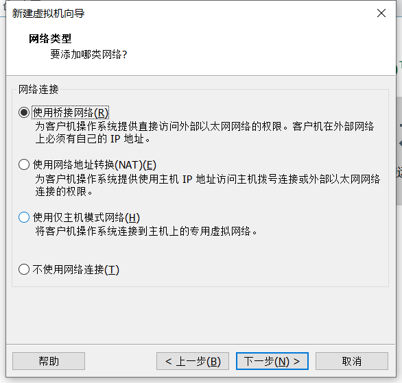
接下来的两步默认即可,然后选择创建新虚拟磁盘
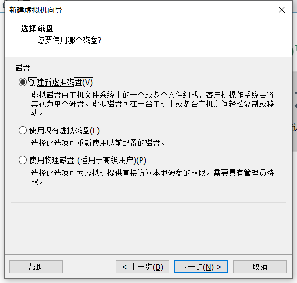
默认大小20G,可以先不改,后续需要可以再加,选择将虚拟磁盘拆分成多个文件
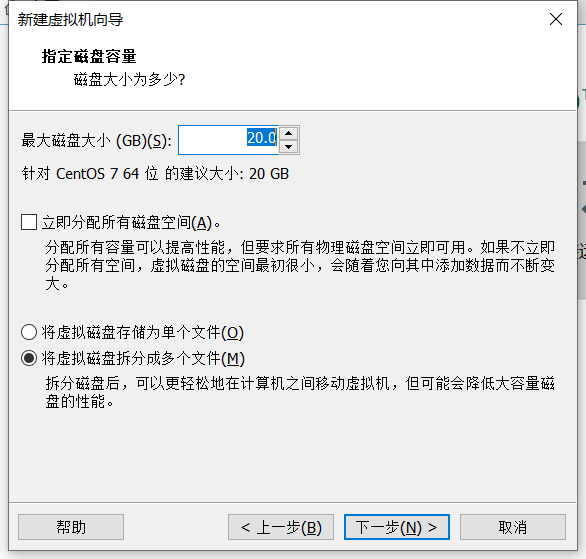
然后一直点下一步最后虚拟机创建完成
打开虚拟机设置,因为我们在上面选择了稍后安装操作系统,所以我们现在需要选择CentOS7的镜像
选择CD/DVD(IDE) 在右侧单击预览找到我们在第一步下载的CentOs7镜像文件
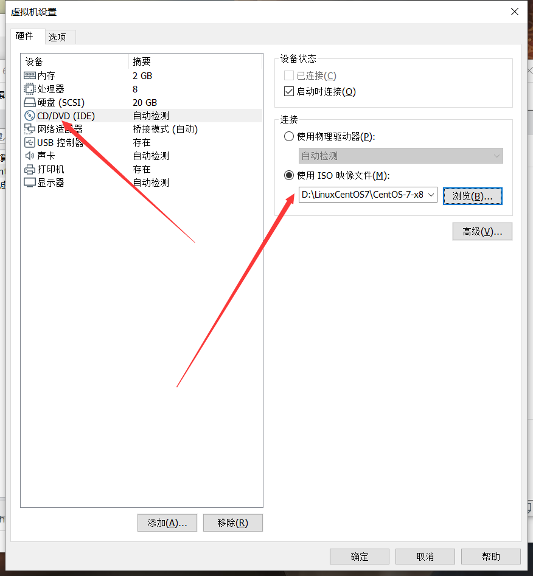
安装好后运行虚拟机，直接选择第一个安装CentOS7,如果选择第二个的话会选检测你的环境,可能会出现一些没必要的报错
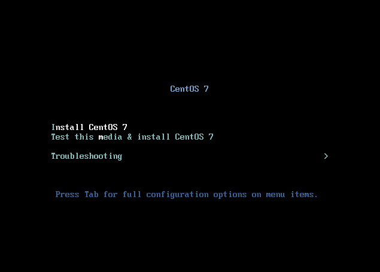
选择第一个后等待它安装,如果没出意外安装好后会出现界面
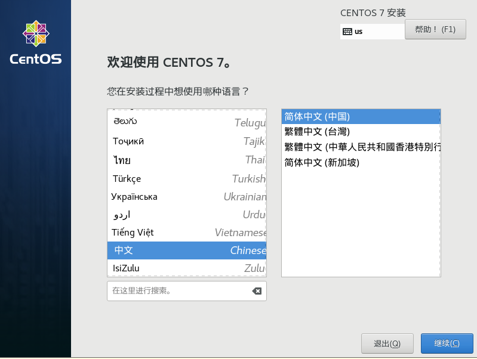
语言我们选择简体中文,点击下一步后进入安装信息界面,如果出现这种黄色感叹号,只要我们点进去然后再点左上角完成就没事了
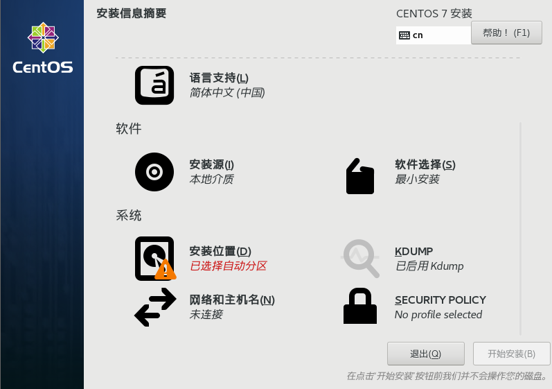
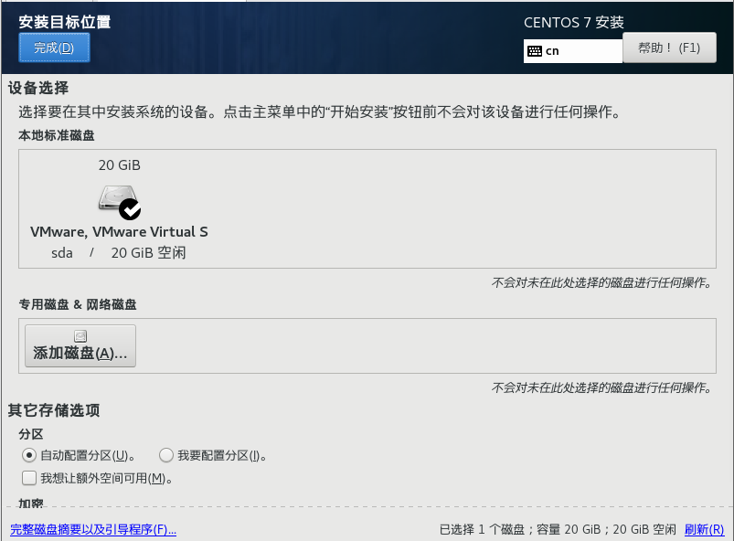
然后点击开始安装,在安装的时候可以设置Root密码,否则用默认的不怎么舒服
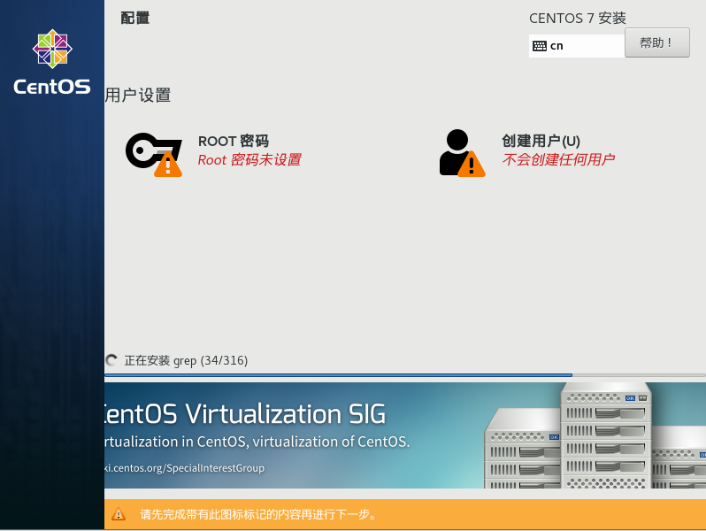
等待它安装,安装好后重启
二.安装redis
1.准备工作
第一步:首先安装gcc依赖
yum install gcc
第二步:下载redis安装包
这步记得先进目录再下载介意进到 usr/local 目录下安装,这里注意一下,如果这种方式安装不了那就进到redis官网下载安装包,然后使用Xftp上传到Linux
wget http://download.redis.io/releases/redis-5.0.4.tar.gz
第三步: 解压压缩包
tar -zxvf redis-5.0.4.tar.gz
为了后续操作方便也可以将文件名改名
mv redis-5.0.4 redis
第五步：编译redis
cd /usr/local/redis/
make MALLOC=libc
第六步：安装redis到bin目录
cd /usr/local/redis/src
make install
第七步：测试是否安装成功
进入到/usr/local/redis/src目录执行启动服务
./redis-server
出现如下界面说明安装成功了！
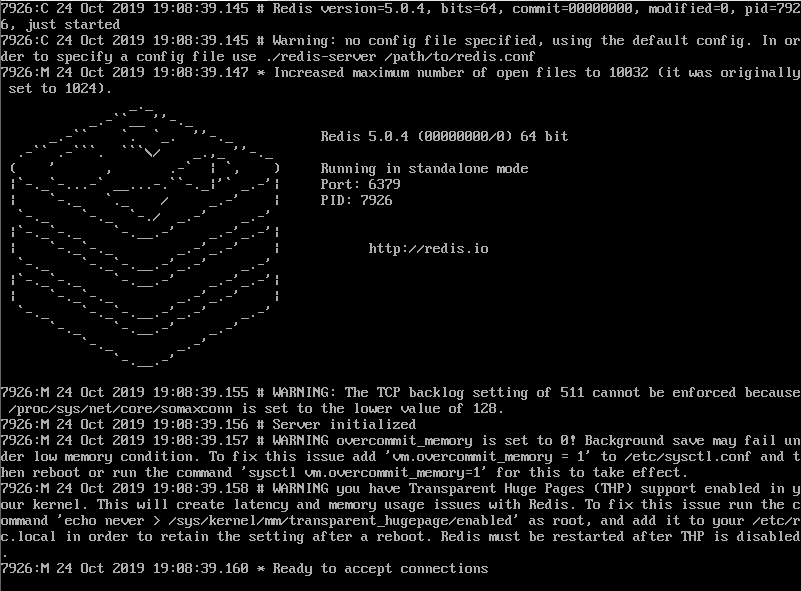
这个时候因为我们不能后台运行,所以会一直在这个界面,先按Ctrl+C退出
第八步：配置redis后台运行
进入到/usr/local/redis/目录,打开redis.conf文件
vi redis.conf
按/打开搜索，然后搜索 daemonize按 i 编辑将daemonize后面的no改成yes,改好后按Esc退出编辑,按住Ctrl+/然后输入wq保存退出.
这个时候我们的后台运行配置就完成了！
再次回到/usr/local/redis/src目录，不过这次运行redis有所不同,这次我们得指定配置文件运行
./redis-server /usr/local/redis/redis.conf
指定我们刚刚配置的配置文件运行，这样我们就能后台运行了！
第九步：配置远程连接
因为redis默认只能本地连接数据库,想要在其他计算机比如我们的主计算机windows上运行的话得更改运行其他IP连接
再次打开redis.conf,按照上面教你们的方法搜索bind 127.0.0.1,然后将127.0.0.1更改为0.0.0.0或者在前面加个#号注释掉也行
redis单机版的安装基本到这就完成了,再提一下,如果想要停止redis服务,执行如下命令
./redis-cli shutdown
三.搭建集群
第一步：准备6份redis
在/usr/local/目录下创建redis-cluster文件夹用于存放redis文件夹
将redis文件夹复制到redis-cluster中,复制6份
找到我们编译好的bin文件夹,如果是按照我的步骤来的话bin文件夹应该是在/usr/local/bin，这个目录,然后创将bin文件夹下所有文件复制到redis-cluter中，复制六份
cp -r bin redis-cluster/redis01
cp -r bin redis-cluster/redis02
cp -r bin redis-cluster/redis03
cp -r bin redis-cluster/redis04
cp -r bin redis-cluster/redis05
cp -r bin redis-cluster/redis06
复制好之后进到redis目录下,将redis.conf文件拷贝到我们刚刚创建的六个文件夹(redis1~6)，如果有 dump.rdb 这个文件的话删掉这个文件 rm -f dump.rdb
这些做完之后我们进入到redis01文件夹,编辑redis.conf文件vi redis.conf
首先将这个文件的cluster中的cluster-enable yes将它的注释解开,只有这样它才能支持集群
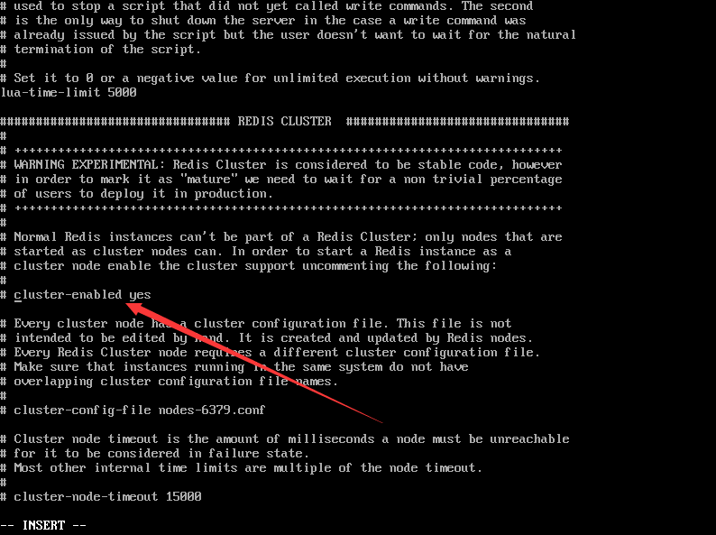
然后找到port 6379，将它改成9624,然后其他五个文件夹重复以上操作,分别改成9624~9629
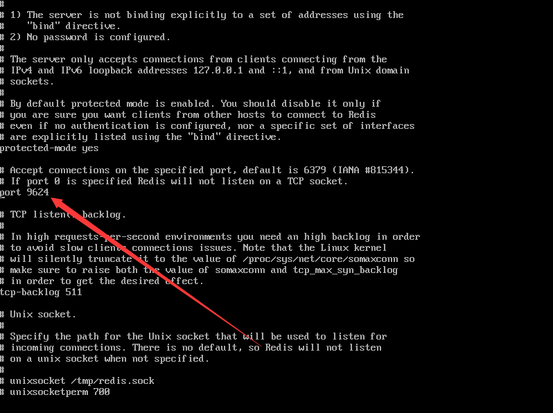
第二步：启动redis集群
经过不懈努力我们终于到最重要的一步了,因为启动集群需要重复六次几乎相同的操作,所以在这做成脚本,否则以后我们每次启动都要重复六次相同的操作有点累人.
进到集群目录,/usr/local/redis-cluster,在目录下直接编辑脚本vi start-cluster
cd redis01
./redis-server redis.conf
cd ..
cd redis02
./redis-server redis.conf
cd ..
cd redis03
./redis-server redis.conf
cd ..
cd redis04
./redis-server redis.conf
cd ..
cd redis05
./redis-server redis.conf
cd ..
cd redis06
./redis-server redis.conf
cd ..
将以上内容编辑到创建的文件中,可以先写一条,然后再按v选中写好的一条,再按y复制,然后换行再按p粘贴,重复五次就好了(记得改redis后面的数字,01~06),写好之后保存退出
然后ls查看是不是多了一个start-cluster的文件,但是这个时候是灰色的
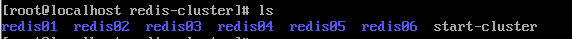
我们得给它权限,让它变成可执行文件,执行chmod u+x start-cluster.sh
这个时候再看,是不是变成绿色了，现在我们直接执行脚本，./start-cluster.sh
执行完后查看是否启动成功,执行ps aux|grep redis
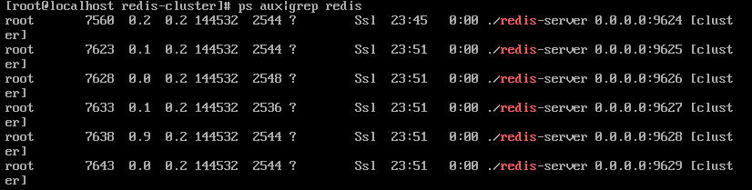
第三步：分配槽
到这一步就几乎已经装好了,只要创建集群然后让它自动分配槽就行了
执行如下命令
./redis-cli --cluster create 127.0.0.1:9624 127.0.0.1:9625 127.0.0.1:9626 127.0.0.1:9627 127.0.0.1:9628 127.0.0.1:9629 --cluster-replicas 1
后面的1表示有一台备份机器,执行完后输入yes然后就行了
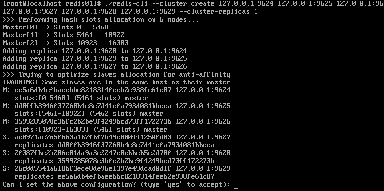
终于把redis集群搭好了,感谢您耐心的看到这里,谢谢！
本博客所有文章除特别声明外，均采用 CC BY-SA 3.0协议 。转载请注明出处！